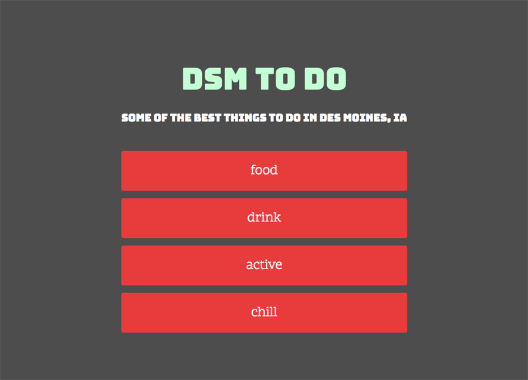
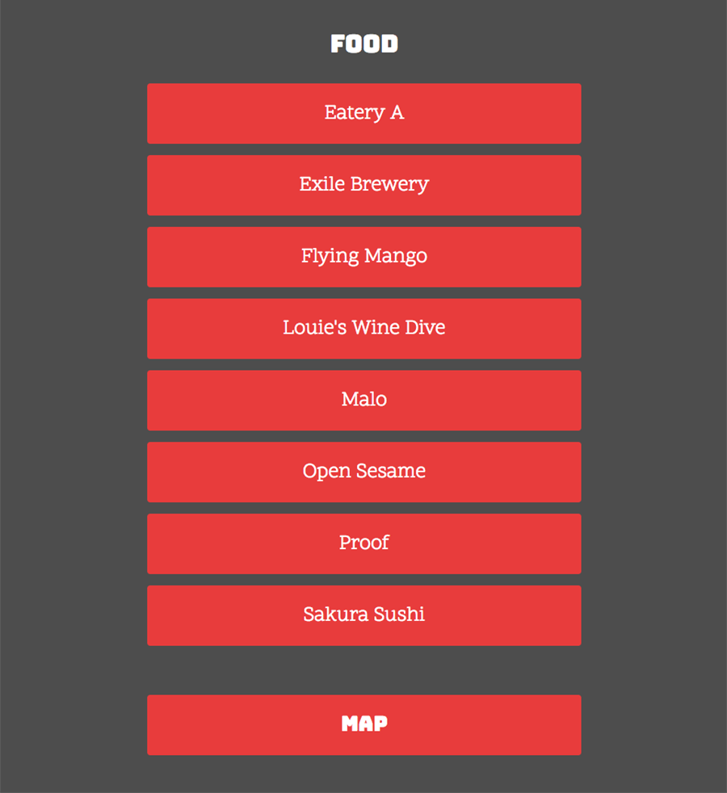
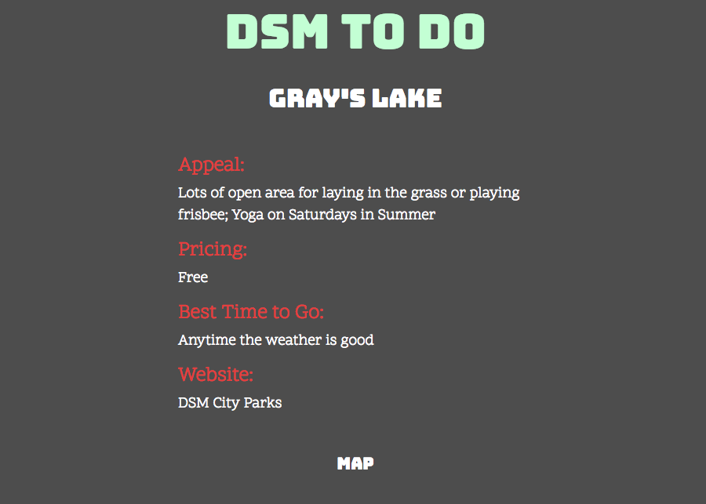
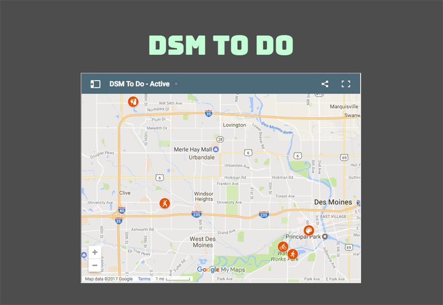

About the Project
I created DSM To Do to make a list of interesting things to do in Des Moines categorized by type of activity. I wanted to create something that people from out of town or new to the area could use as an introduction to the city. I used HTML & CSS and a simple color palette to make the site simple and quick to use. I used the Google Maps API so users could locate areas of interest as well as see where they were in relation to points around the city.
View the source code at GitHub.



